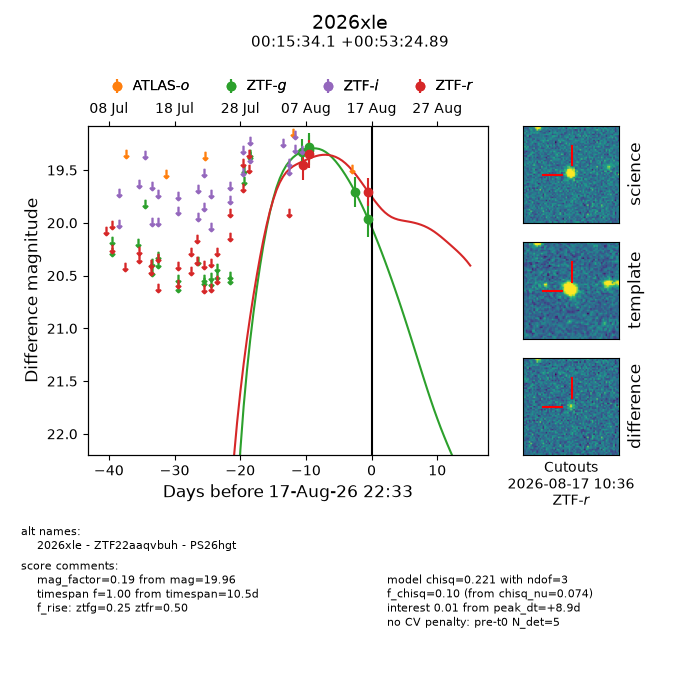
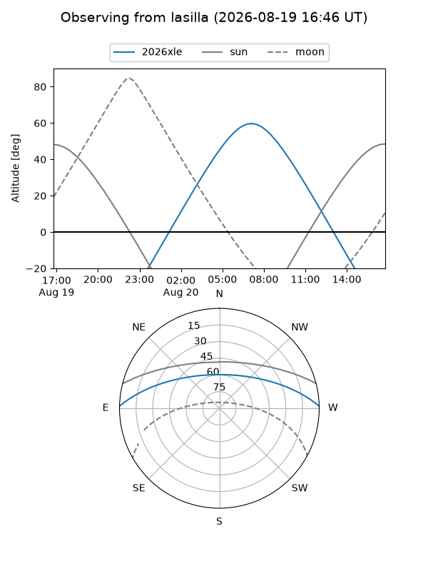
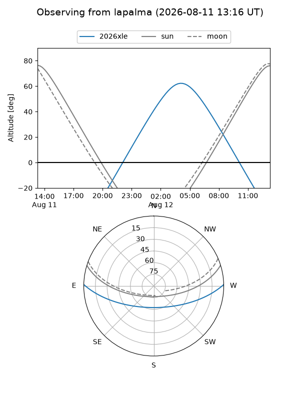
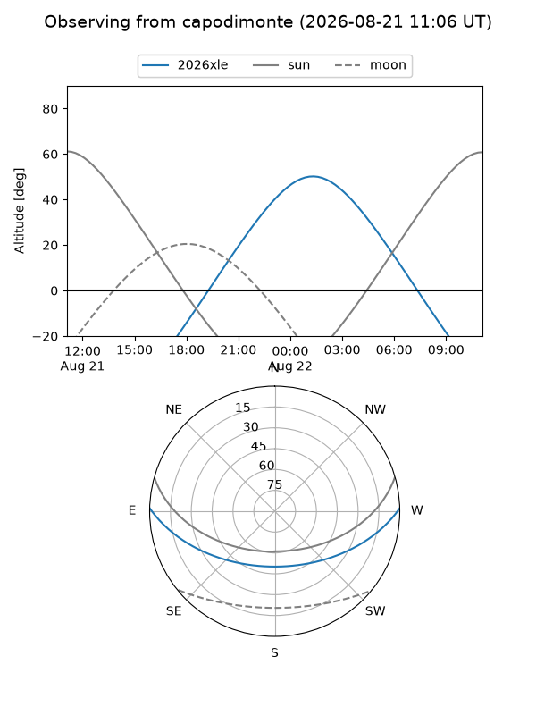
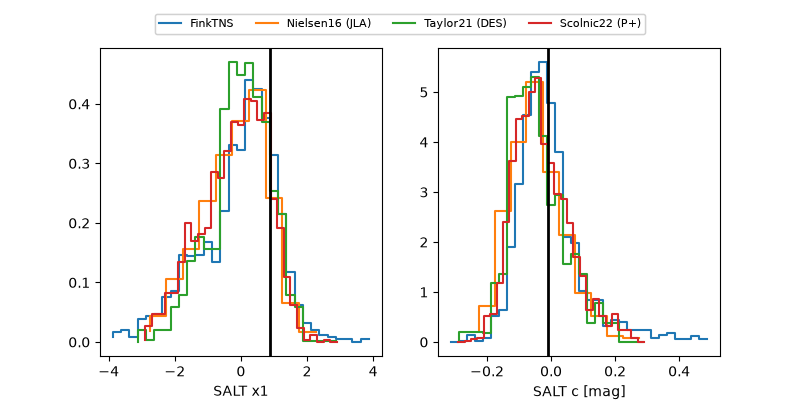

2026xle
Target 2026xle at 2026-08-17 22:37
Aliases and brokers:
FINK-ZTF: ztf.fink-portal.org/ZTF22aaqvbuh
Lasair-ZTF: lasair-ztf.lsst.ac.uk/objects/ZTF22aaqvbuh
ALeRCE-ZTF: alerce.online/object/ZTF22aaqvbuh
YSE-PZ: ziggy.ucolick.org/yse/transient_detail/2026xle
TNS name: wis-tns.org/object/2026xle
Direct TNS query: direct search
alt names
ZTF22aaqvbuh (ztf,fink_ztf)
2026xle (tns,yse)
PS26hgt (panstarrs)
Coordinates:
equatorial (ra, dec) = 3.8920,+0.89025
equatorial (HMS+DMS) = 00:15:34.08,+00:53:24.89
galactic (l, b) = (104.3719,-60.68241)
Flags:
TNS type: nan
peak dt: +8.9
Photometry:
last ztfg=19.96, ztfr=19.70
5 ztfg, 3 ztfr detections
Lightcurve

Visibility



Additional plots
